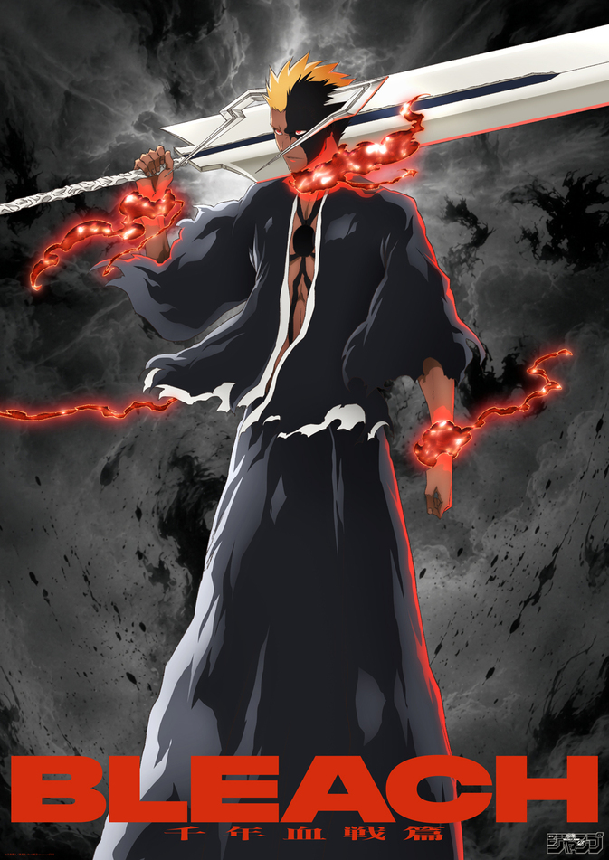
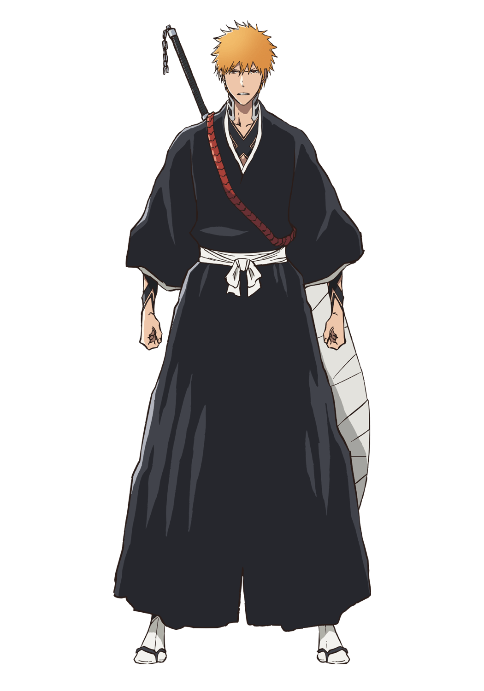
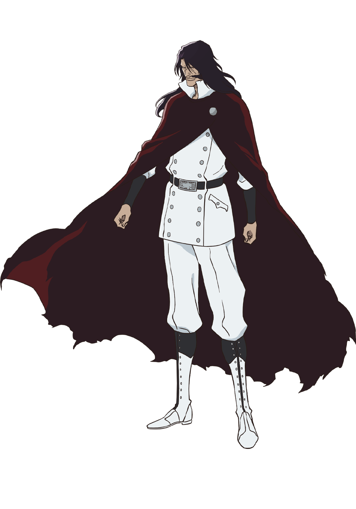
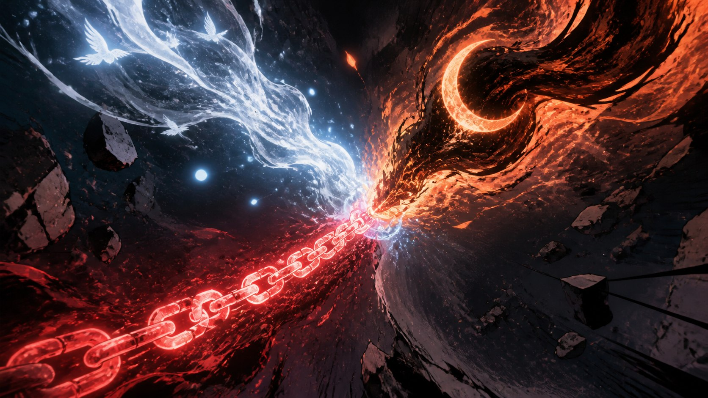
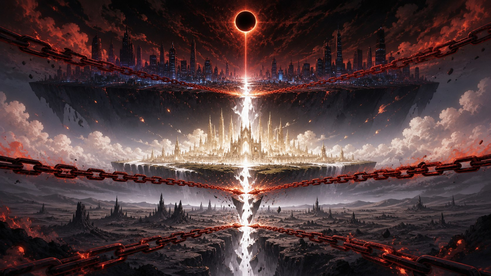

OLD MAN OTAKU / ANIME NEWS • AUGUST 23, 2026
BLEACH: TYBW Reveals Blood Chain Ichigo—and Changes the Final Fight
Episode 45 gives Ichigo Kurosaki a Tite Kubo-designed form that did not arrive as another routine power-up. It turns the hero's mixed inheritance, his fear of losing control and the anime's expanded endgame into one striking image.

Spoiler warning: This article discusses major events and abilities shown in BLEACH: Thousand-Year Blood War Episode 45, “DEFEND YOU.”
BLEACH: Thousand-Year Blood War has finally shown the kind of expansion fans hoped the final cour could deliver.
Following Episode 45, the production unveiled a dedicated video and a new entry in its “THE STORIES VISUAL” project for Blood Chain Ichigo—the official English-friendly rendering of Kessa no Ichigo (血鎖の一護). Aniplex's announcement goes further than merely posting a cool image: it states that original creator and chief supervisor Tite Kubo personally drew the character design and named the form.
That makes this more than a weekly preview or a marketing nickname attached after the fact. It is new Kubo-authored material created for the anime's version of the final confrontation with Yhwach.
It is also a reveal that needs careful language. Some English coverage has called Blood Chain Ichigo a new Bankai form. The official Japanese announcement simply calls it a “new form.” The official Episode 45 synopsis separately confirms Ichigo's partial Hollowfication and his fusion of Getsuga with Gran Rey Cero, but it does not publish a complete technical rulebook for Blood Chain Ichigo.
So what do we actually know—and why has the reveal immediately become one of the final cour's biggest conversation points?


Official character images: © Tite Kubo/Shueisha, TV TOKYO, dentsu, Pierrot. Used for identification and editorial commentary.
What is officially confirmed
- Blood Chain Ichigo appears in Episode 45, “DEFEND YOU.”
- Tite Kubo designed and named the new form.
- Ichigo awakens the Hollow power within him and enters partial Hollowfication during his fight with Yhwach.
- He combines Getsuga's power with Gran Rey Cero.
- A dedicated reveal video and “THE STORIES VISUAL” were released after the episode.
- The official announcement does not, by itself, classify Blood Chain Ichigo as a separate new Bankai.
The chains make Ichigo's power look controlled—and imprisoned
Ichigo's abilities have always been a negotiation between identities that other characters want to separate. Soul Reaper. Hollow. Quincy. Human. The dramatic point is not that he owns several disconnected power sets. It is that all of them belong to one person, even when Ichigo fears what accepting them might cost.
Episode 45 turns that internal history into visible combat language. The official synopsis says Ichigo calls up the Hollow within him, partially transforms and releases a Gran Rey Cero fused with Getsuga. That is not a random new technique handed to him in the last act. It extends the logic established when Ichigo finally understood that the forces inside Zangetsu were not foreign invaders occupying his soul.
The blood-red chains complicate that acceptance. Chains can restrain power, bind a prisoner or connect things that would otherwise separate. Blood can signify lineage, injury, inheritance or a price that cannot be paid cleanly. The anime has not issued an official symbolic glossary, so those meanings remain interpretation—but the design invites them.
Blood Chain Ichigo therefore reads less like victory armor and more like dangerous integration under pressure. His power is unified enough to strike, yet the imagery refuses to make that unity look comfortable.

Why this matters more than a stronger attack
Yhwach's advantage has never been presented as a simple gap in destructive force. He attacks Ichigo's belief that effort, instinct and the will to protect can still create a future. The official Episode 45 synopsis makes that argument explicit: after Ichigo unleashes his fierce attack, Yhwach remains unmoved and confronts him with the weakness of “the power to protect.”
That phrasing goes to the center of Ichigo's character. He rarely fights because he wants a throne, title or abstract supremacy. He fights because someone is in danger and he believes reaching them still matters. Yhwach's power threatens more than Ichigo's body; it threatens the premise that choosing to protect anyone can alter what comes next.
Blood Chain Ichigo makes the confrontation newly personal. The form gathers the parts of himself that once terrified him, then places them against an opponent who claims the future is already decided. The resulting question is not only whether the attack is powerful enough. It is whether Ichigo's full, contradictory self can produce a future that Yhwach did not allow for.
The anime is no longer just illustrating the manga's ending
The Thousand-Year Blood War adaptation has repeatedly used Kubo's supervision to restore, clarify and expand material around the manga's compressed final stretch. The new form is the clearest possible signal that the final cour is willing to add consequential material directly inside the story's central battle.
That distinction matters. An extra exchange of blows can improve pacing without changing how viewers understand a character. A creator-designed form, named within the production and given its own visual campaign, becomes part of the vocabulary fans will use to discuss Ichigo from this point forward.
VIZ's announcement for The Calamity emphasized Kubo's close production involvement and described this conflict as Ichigo's most consequential battle, one that will determine the fate of all worlds. Blood Chain Ichigo is evidence of what that involvement can look like on screen: not a detached bonus scene, but a new dramatic expression placed at the heart of the ending.
It also changes the adaptation conversation. For years, readers could approach the anime knowing the broad destination. Now the route itself contains new Kubo-designed landmarks.
Do not let the “Bankai form” headline settle the debate
The fastest way to flatten this reveal is to force it immediately into a power-scaling label the official material has not fully defined.
Yes, the form appears during the endgame confrontation. Yes, Ichigo's transformed state, blades and combined techniques are all part of the same battle. But “Blood Chain Ichigo is officially a brand-new Bankai” is a stronger statement than Aniplex made. The official wording confirms a new Ichigo form; the episode synopsis confirms Hollow awakening and a Getsuga–Gran Rey Cero fusion.
Those pieces can support theories about how Ichigo's Bankai, Hollow power and Quincy inheritance are operating together. They do not make every theory a production fact.
This is where the fan discussion is likely to stay lively. Are the chains a restraint imposed on overwhelming power? A visible manifestation of lineage? A response to Yhwach's domination of the future? A design bridge between earlier versions of Ichigo? The imagery is specific enough to generate strong readings and open enough that the next episodes still have room to answer them.

A form built for the final argument of BLEACH
The best transformations in long-running action stories do more than change a silhouette. They make a character's history visible.
Blood Chain Ichigo does that with unusual efficiency. The Hollow power once associated with loss of control becomes something Ichigo deliberately awakens. Gran Rey Cero, an attack tied to the Arrancar side of the series, merges with Getsuga, the technique most closely associated with Ichigo's identity as a Soul Reaper. The chains then wrap the result in imagery of binding, blood and consequence.
Nothing about it looks easy. That is why it fits.
Ichigo's final strength should not feel like a clean upgrade purchased after a training montage. His story has been about learning that inheritance can be painful without being false, that fear can belong to him without defining him and that incompatible-looking pieces can still form a whole.
Against Yhwach, that whole is being tested by an enemy who represents control on the largest possible scale.
The RogueVerse take
Blood Chain Ichigo is important because it gives the anime a new answer to an old question: what does Ichigo look like when he stops treating the powers inside him as separate emergencies?
The answer is not peaceful. It is chained, bleeding with color and pointed directly at the man trying to erase choice from the future.
That is a stronger piece of storytelling than simply announcing “Ichigo got another form.” It connects Kubo's expanded anime material to the core of the protagonist, gives the final fight a new visual identity and preserves enough uncertainty for the reveal to remain dramatically alive.
For now, the most accurate conclusion is also the most exciting one: Blood Chain Ichigo is official, Kubo designed it, and the anime has entered territory the manga alone cannot fully map.
The chains do not make Ichigo look free. They make his decision to keep fighting look chosen.
Sources
- Aniplex: Blood Chain Ichigo visual announcement and Kubo design credit
- Official BLEACH: TYBW site: Episode 45 synopsis and staff
- Official reveal video: “Blood Chain Ichigo”
- VIZ Media: The Calamity premiere, synopsis and Kubo's production involvement
- Anime Corner: English-language reveal coverage
Facts checked August 23, 2026. The official Japanese announcement uses 血鎖の一護 (Kessa no Ichigo), rendered here as “Blood Chain Ichigo.” Interpretive discussion is labeled as analysis rather than official lore.